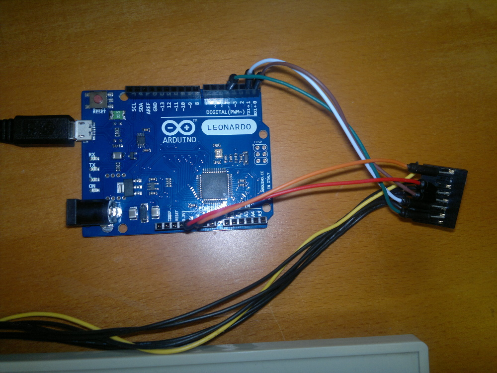

The Atari ST was developed with an intelligent keyboard controller that converts keypresses and controller movements into commands that are sent to the main system for action. The code provided here runs on an Arduino Leonardo and maps Atari keypresses to the corresponding USB keyboard actions.
I chose a Leonardo as it can act directly as a USB HID device without requiring any low level re-programming as some of the other Arduinos would need.
I have tested this code with an Atari 520STFM keyboard. It may or may not work with other Atari ST keyboards.
On the Atari ST the mouse and joysticks were also attached to the keyboard. I decided not to attempt mapping those devices to the Pi mainly because I prefer the ergonomics of modern mice and joysticks.
The sketch is available to download from Github. See the Arduino Getting Started pages if you are new to Arduino.
Parts of the code were originally provided in a forum post several years ago by user 'joska' of the now defunct www.atari-forum.com. Thanks to him or her for that.

Return to home page.